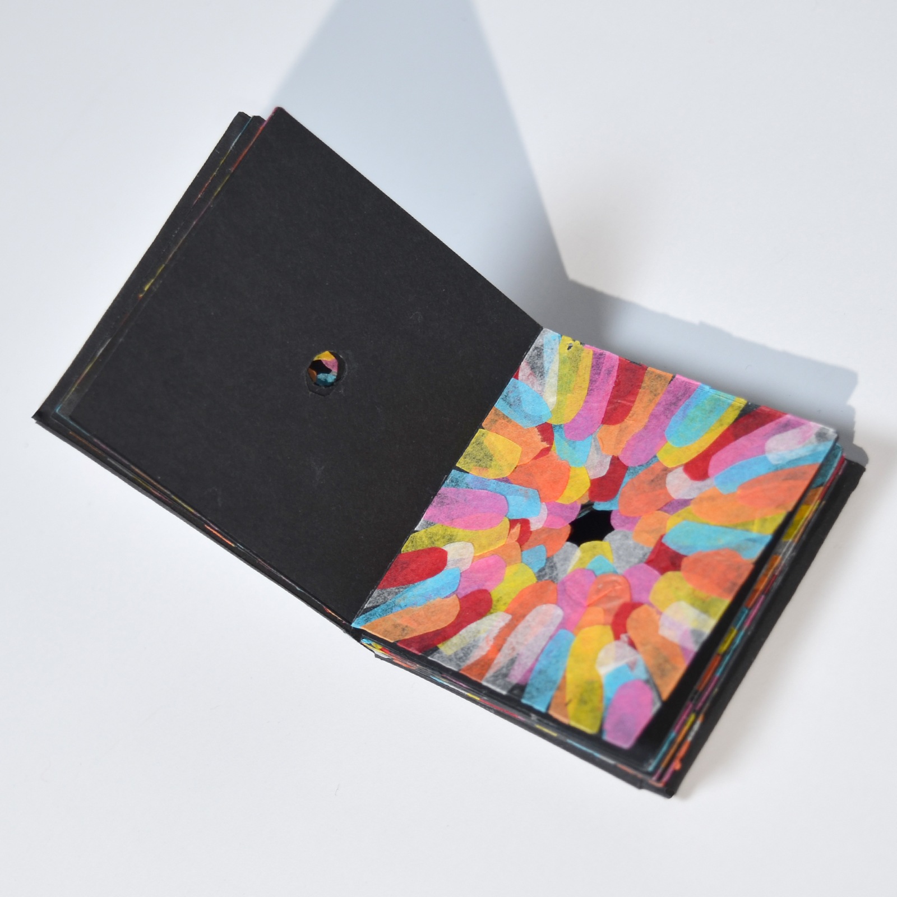
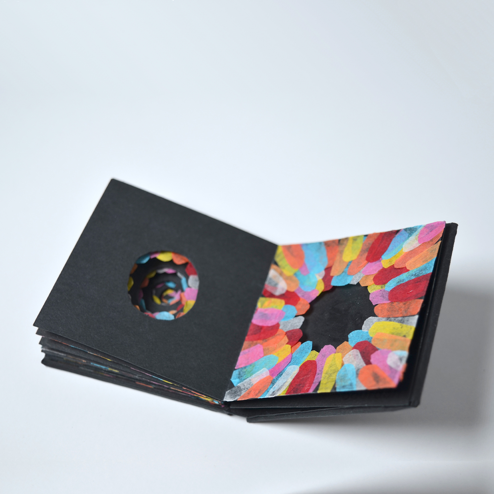
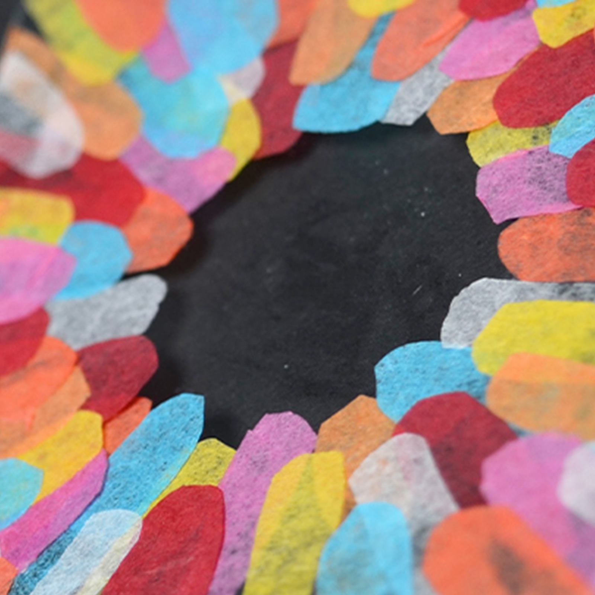
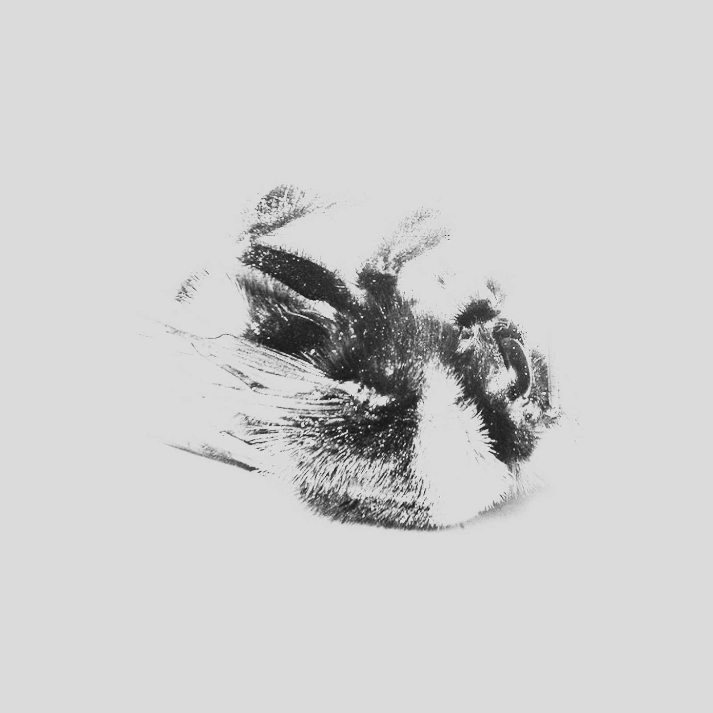

somnus æternam
2026 ReliureEdition réalisée sur le thème des insectes, plus précisément du bourdon pour ce livre.
Le petit format (6x6cm), les pétales délicates et l'impression en noir sur noir invitent à prendre soin de l'ouvrage et à decouvrir lentement les mots alors que l'histoire raconte la mort du bourdon.




